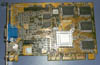

|
|
| 当前位置：电脑报电子版 > 1999 年 > 43 期 > 硬件周刊 > 实战TV_OUT——电视输出DIY |
| 《 实战TV_OUT——电视输出DIY 》 |
| 大家一定都对电脑非常熟悉了吧？整天面对那个小小的显示器是不是感到有点不满足？（什么？你有21寸的显示器？那你还是继续“享受”你的显示器去吧）试过使用显卡的TV－OUT（电视输出）功能么？如果你没有试过TV－OUT，并且想感受一下，那你就跟我来吧！
一、为什么要使用TV－OUT 大家可能会奇怪，电脑用显示器来显示画面不是很好么？为什么要把它输出到电视上呢？电视屏幕虽然大，但是画面并不清晰，闪烁也很厉害。的确，一般电视的分辨率很难达到目前显示器上最基本的800×600，甚至连640×480也很吃力，用来显示电脑上的文字效果很不理想。但是电视用来显示另一类图像就很有优势，那就是动态图像。大家一定比较过电脑上放VCD和用影碟机在电视上放VCD在画面效果上的优劣吧？是不是觉得电视上的VCD画面看起来更连贯些、更柔和些？这就是显示器和电视机的区别。从物理特性上来看，电视机的显示与显示器的显示有以下不同： 刷新率：电视机的屏幕刷新率通常只有50Hz，这也是它闪烁的主要原因。而目前电脑显示器的刷新率都能达到85Hz以上。 荧光粉涂层：由于电脑显示器通常要用来表现精细、准确、高速刷新的静态图像，所以它的荧光粉的辉光保持时间就比较短，通常在10ms～20ms左右，这样便于避免闪烁和图像拖尾。而电视机主要是为了动态图像的显示而设计的，因此它的荧光粉辉光保持时间比较长，通常在30ms左右。 分辨率＆点距：电脑显示器的点距多为0.28mm左右，所能达到的最大分辨率通常在1024×768以上。而电视机的点距就大得多，你凑近电视屏幕就能清楚地看到这些构成显示屏幕的小点，具体的大小你就自己测量吧。 屏幕尺寸：这就不用我多说了吧，呵呵，别忘了现在29英寸的电视遍地都是，可21英寸的显示器却是凤毛麟角呀。 二、TV－OUT的硬件连接 要想实现TV－OUT，一块带有电视输出功能的显示卡和一台电视机是必不可少的。下面先来看看我的装备：一块华硕AGP－V3100显示卡，带有电视输出功能（如图1）； 一台普通的电视机，带有AV输入（视频音频输入）功能（如图2）。  我们首先要找到显卡的电视输出部分。看到图3上面那个黄色的莲花插座了么（什么？报纸是黑白的？＆＄％@＊＃）？看文字也行，那个“视频输出”接口就是我们今天要用的东西。那个“S－端子输出”接口也是用来输出到电视机的，可是我的“高性价比”的电视机不支持S－端子输入。下面我们要找到电视机上的视频输入接口，它一般在电视机的背后，功能较强的电视机往往都具备多组AV输入接口，并且音频输入部分分为左右两个声道，通常我们可以通过颜色来识别，黄色的接口通常代表视频，红色的和白色的通常代表音频。至于我这台电视机，由于“性价比”过高，就只有一个视频和一个音频接口（如图4）。注意到下面那个莲花插头了么？那就是连接显示卡和电视机的信号线，通常支持电视输出的显示卡都会随卡附带一根这样的连接线，没有的话从电子产品市场上买一根回来也行。 接下来的事情谁都会做了，把这根信号线分别插进显卡和电视机的视频输出/输入接口，如图5和图6。 三、TV－OUT的软件安装 开机，在桌面空白处点鼠标右键，在弹出的菜单中选择“属性”，再选择“设置”→“高级”→“ASUS电视设置”，会出现如图7所示的画面。你一定看到了，我这套设备上有关电视的复选框是失效的，无法选中。没关系，我们还有别的办法打开有关电视的选项。我安装了S3的优化程序S3 Tweak（有关S3 Tweak的使用方法请参阅《电脑报》今年第39期第32版的内容），然后选择S3 Tweak的“Display”功能，会出现如图8的画面：注意到了么？这次“TV”这个设备被系统承认了，TV图标下面的提示就变成了“Supported Connected（支持并已连接）”。在TV图标下的复选框上打上对勾，再去看看你的电视机（别忘了打开电视机并切换至AV方式），是不是有种惊喜的感觉？（如图9）到了这一步，TV－OUT实战演习应该算是成功了。但是我们作为DIYer肯定不会仅仅到此为止，毕竟TV－OUT功能是拿来用的，而不是试验成功了就完事。下面接着来： 四、TV－OUT的设置优化 经过上一步，我们已经能够在电视上显示Windows的桌面了。下面我们再来进行一次“桌面属性” →“设置”→“高级”→“S3 TV输出”，这一次有关电视的选项乖乖地露了出来（如图10），看来华硕的驱动程序有些BUG（请注意，我现在使用的是附带S3 Tweak的公板驱动程序，可以到http://file.mydrivers.com/display/s3fach38.exe去下载）。在“电视类型”中你可以选择各种不同的制式，其中PAL为中国的标准制式，而NTSC是美国日本等地采用的制式。一般情况下只要你的电视机是多制式的，选择各种制式都可以。至于我这台“高性价比”的电视嘛，选择NTSC制式图像会变成黑白的。“电视输出信”其实应该是“电视输出信号”，这是驱动程序的BUG。在这一项中你可以选择信号的输出方式，通常有“复合式”和“S－Video”两种，其中复合式就是我们所用的混合视频输出，“S－Video”就要用上文提到的S端子了。我们接着来进行高级设定（如图11）： “闪烁过滤器”可以使画面看起来更稳定些；“清晰度”调节滑杆可以手动改变电视输出画面的清晰度，不过这种清晰度是采用抖动方式实现的，虽然文字看起来清晰了一些，但是画面的闪烁却明显了许多，得不偿失。“TV控制”下面有关于亮度、对比度、颜色、色调的调整，和电视机自带调节功能的差不多，大家可根据个人喜好调整。 点击图11上面的“TV调节”选项卡，可以进行电视画面尺寸的调节（如图12）。调节方法很简单，和显示器的调节方法一样。如果你的显卡输出到电视上的画面不能满屏或者偏向一边，这个调节功能还是有点作用的，不过它能调整的幅度有限，在我这台电视上画面无论如何也调不正。 好啦，设置优化也基本完成了，我们可以在电视上玩游戏、看影碟了，看看效果如何！ |
| 下载本期推荐软件 | 页 首 |
| 《电脑报》版权所有，电脑报网站编辑部设计制作发布 |
{kind=link}